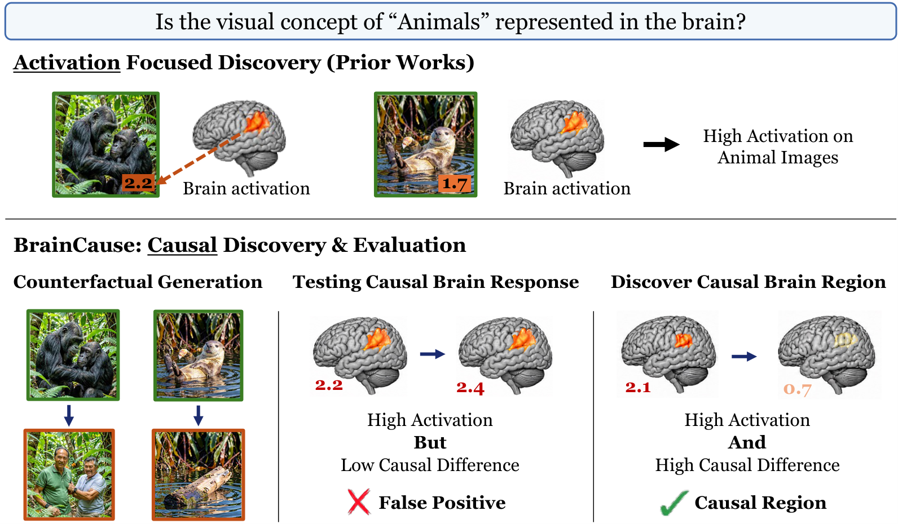
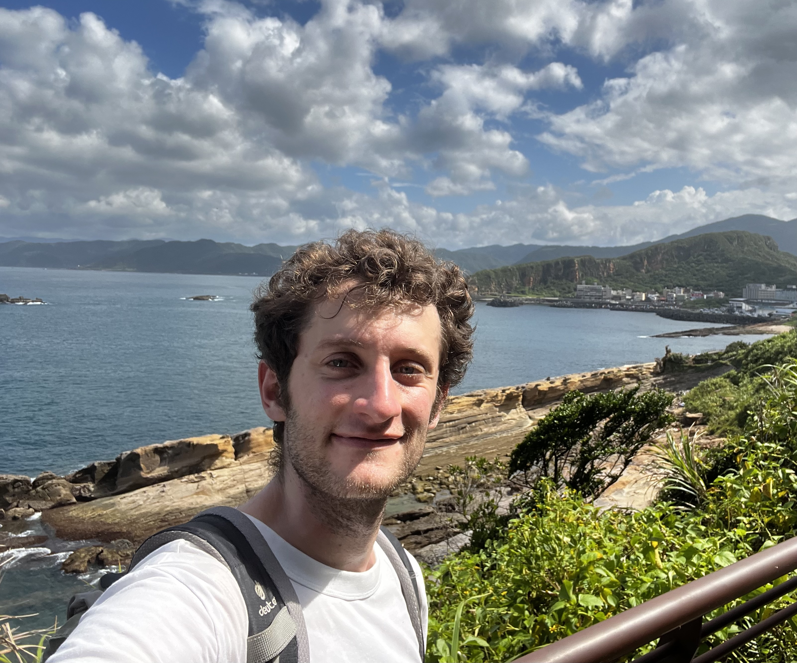
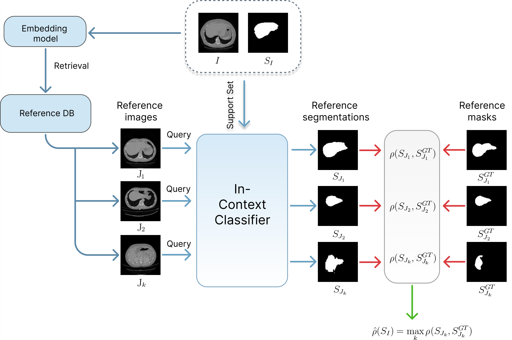
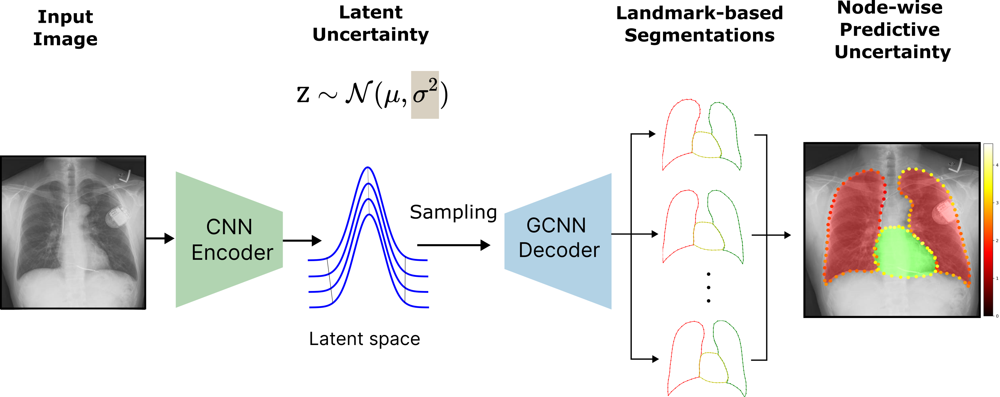
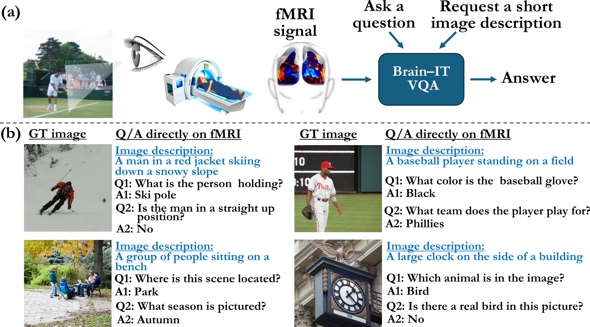
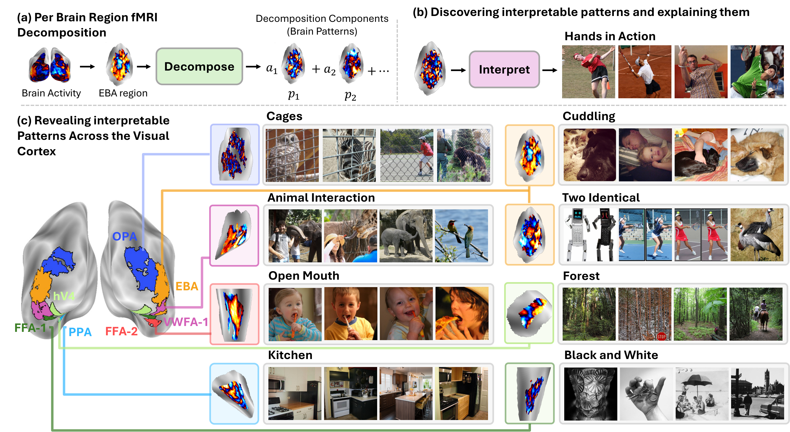

Matias Cosarinsky
I am a PhD student at the Weizmann Institute of Science, advised by Michal Irani. I previously completed my BSc and MSc at the Universidad de Buenos Aires, advised by Enzo Ferrante. My research interests include deep learning, computer vision, and computational neuroscience, with a particular focus on understanding and interpreting visual representations in artificial neural networks and the human brain.
Publications

ConfIC-RCA: Statistically Grounded Efficient Estimation of Segmentation Quality
IEEE Transactions on Medical Imaging, 2026

CheXmask-U: Quantifying uncertainty in landmark-based anatomical segmentation for X-ray images
Medical Imaging with Deep Learning (MIDL), 2026

